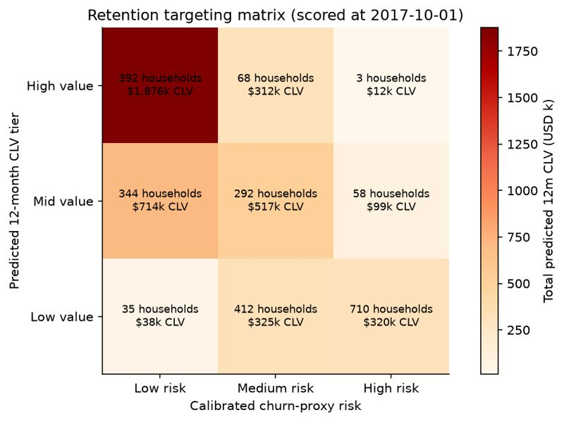
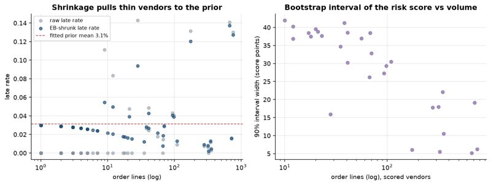
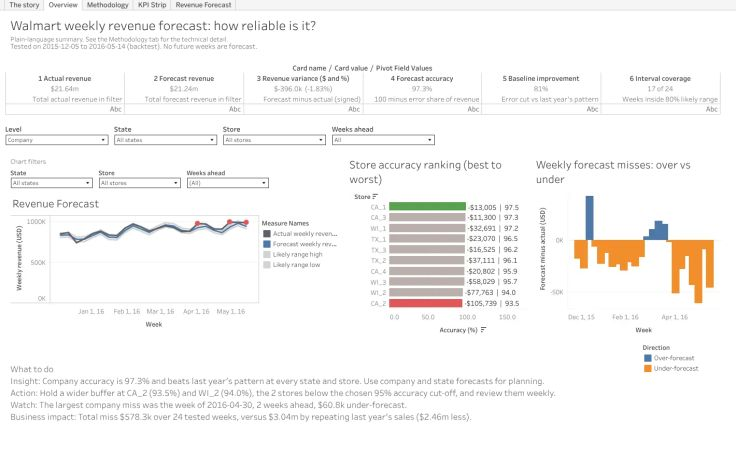
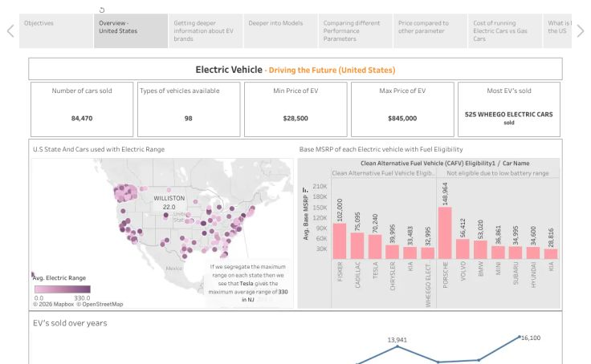
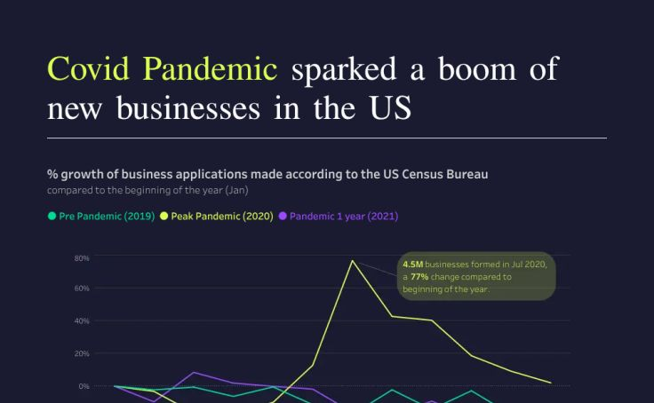

2021 to 2023
Master of Science, Information Systems
George Mason University
Business Intelligence Analyst
Supply chain and market analytics. Pricing, cost, inventory, profitability and sales analysis that turns data into decision-ready reporting.
I am a Business Intelligence Analyst working across supply chain and market analytics, with experience in pricing, cost, inventory, profitability, sales, and supply chain analysis.
I use SQL, Advanced Excel, Power BI, Tableau, and Snowflake to build pricing models, forecasts, automated reporting, and decision-ready analysis. I partner with Finance, Pricing, Operations, and Supply Chain teams to evaluate cost drivers, market trends, and business requirements that support accurate, profitable commercial decisions.
2021 to 2023
George Mason University
2017 to 2021
University of Mumbai


A delivery risk scorecard for health-commodity vendors in the USAID / PEPFAR supply chain, scoring on-time delivery risk from order line history.


An interactive Tableau story exploring electric vehicle data.

A Makeover Monday Tableau dashboard on business formation in the US during the pandemic year.
Resume project
Built forecasting and profitability analysis models on 6,000+ records. Used Snowsight Worksheets and Snowflake Notebooks for SQL and Python data preparation, validation and analysis, then connected Snowflake views to Tableau to show trends and profitability insights for business planning.
May 2024 to Present
Dye Capital & Company
Jan 2024 to May 2024
Volkswagen Group of America
Sept 2023 to Jan 2024
Changing the Present
Open to conversations about business intelligence and analytics roles.
madkaikarkrushmi@gmail.com